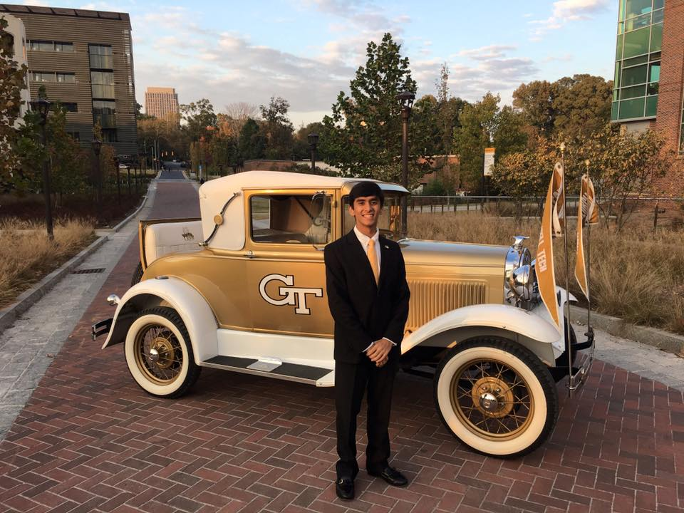

ARchitect was a hackathon project for HoloHack 2016. ARchitect is a room planning application for the future. It allows you to place holograms of furniture in any room and actually see what the room would look like if the furniture was actually there, which saves users time and money.
I did the HoloLens side of the application and worked on the backend as well in order to link the HoloLens gesture detection code to the frontend of the application.
2016, Personal, C#/Unity, Augmented Reality, Human Computer Interaction
ART2 is a joint research project bwtween Harvard Medical and Georgia Tech under professors Randy Trumbower and Ayanna Howard. The goal of this project is to integrate augmented reality and body sensors to gamify the rehabilitation process of relearning how to walk. By using an augmented avatar that mimics the way the rehab patient is walking, we are able to solve the problem that rehab patients often face of looking down at their feet to get visual feedback. Augmented reality also give sus the option to manipulate the avatar to further emphasize the imperfections in the rehab patient's walking style. This can be accomplished either overtly by doing something like overemphasizing a limp or subtly by adding auditory or visual feedback. Originally, Dr. Trumbower was in Emory, but moved to Harvard Medical during the July 2017. Currently, the application is finished and we are ready to start conducting user studies and hope to publish our findings in the next couple months.
I am the lead researcher for this project and have written all of the HoloLens code and Android code to interface with the HoloLens. This includes developing a method for the HoloLens to receive data from an Android device. I used BLE to accomplish this because it allows for an offline data transfer method. Even though the HoloLens does not officially support this functionality, I was able to find a way to accomplish this.
In this research project, I worked with Professor Polo Chau to leverage augmented reality to better teach elementary coding concepts. With augmented reality, we are able to provide a more immersive experience that engages users and allows users to experience better visualizations and feedback. We are investigating the advantages and disadvantages of both the HoloLens and ARKit. We published a poster paper with our results in Chinese CHI 2018 and won the Best Poster Award at the conference.
I was the lead researcher for this project and wrote written all of the HoloLens code as well as a majority of the backend infrastructure.
Brick Breaker for a GBA emulator. After using "make vba", you can start playing the game by hitting the start button (Enter). To play the game, use the arrow keys to move your paddle. You get to the next level by hitting all of the bricks with the ball. Upon finishing all of the levels, you can restart the game by hitting the start button (Enter) or you can restart the game at any time by hitting the select button (Backspace). There are animations for finishing a level, losing a life, and winning the game.
Galaga for a GBA emulator. After using "make vba", you can start playing the game by hitting the start button (Enter). To play the game, use the arrow keys and press A (Z) to fire a laser. You get to the next level by shooting all of the enemies while you lose a life if you collide with an enemy. Upon finishing all of the levels, you can restart the game by hitting the start button (Enter) or you can restart the game at any time by hitting the select button (Backspace).
With Professor Thad Starner, we are investigating the horizontal displacement of notifications on head-mounted displays and how their perception varies from a bystander's perspective. We have already gotten extremely interesting results and have the data to show that the horizontal angle of a short message has no impact on the perceived distraction. Our goal is to be able to make a formula that calculates the exact level of distraction that a bystander will perceive based on various factors such as position, message length, or pace of conversation. With the data that we are collecting, this project can have a very big impact on how companies actually design headsets and we can actually push the augmented reality industry in a certain direction. We will be publishing our initial results soon and will continue to explore the problem.
I am the lead researcher for this project since it started and have designed our experimental design and wrote the code for the website that we use in our experiments.
During my second internship at Google, I interned in the Research and Machine Intelligence team in the semantic search group, led by Ray Kurzweil. On a high level, our group works towards adding natural language understanding to any type of search problem. Upon arrival, our most successful model used a combination of bag-of-words for encoding a sequence of text and heirarchical language modeling. While this was a good and fast approach, it lacked knowledge and awareness for longer documents as bag-of-words does not maintain order. My project revolved around finding better ways of understanding textual documents of various lengths, specifically focusing on how to incorporate knowledge of words beyond immediate neighbors. Initially, I approached this by using an LSTM as the sequence encoder instead of bag-of-words. After trying different approaches for obtaining the sequence ecoding from the LSTM, I concluded that LSTMs were too slow to justify the slight increase in accuracy. After that, I started an encoder that was part of a network released during my internship called the Transformer network that used multi-headed self-attention to allow the model to look at all inputs while not compromising too much on speed. Through this approach, I was able to improve our main offline metric of next message prediction by 8% and pushed the team in a very promising approach to the problem we are trying to solve.
I was given a lot of freedom in the direction that I wanted my research to go in. Along with a full-time employee, I was one of the two main people leading the initiative with the Transformer network. With this, we had to fully learn the network and how to integrate it into our existing model. Through this process, I pushed two big code refactors to allow for easier integration and flexibility in choosing sequence encoders.
2017, Work, Research, Python, Natural Language Processing
LogoLens was a hackathon project HackMIT 2016. LogoLens presents relevant stock quote data when a user sees a company logo in the surrounding environment. This encourages users to invest in stocks, grow their personal investments, and raises awareness about the stock market in general. We won the NASDAQ API prize at HackMIT and demoed the application to NASDAQ executives in January 2017.
I led the HoloLens development and worked on the UI and integration with the NASDAQ API and Google Cloud Vision API. In the process, I developed an algorithm to take a picture in a HoloLens application before it was officially supported.
During my first internship at Google, I worked on finding solutions to typing for extended periods of time in virtual reality while keeping a use case of productivity in mind. The biggest problem with current solutions was tactile feedback. I created two main approaches that added tactile feedback. The first was using a physical keyboard for tactile feedback while aligning a virtual copy of the keyboard to the exact position and rotation of the real keyboard so that the VR experience is not broken by removing the headset to find the keyboard. In order to do this, I developed a highly precise algorithm that would find the 3D position and rotation of the physical keyboard through finger tracking and having the user place their fingers on the home keys and press the spacebar. This would allow users to continue using existing technology in a new environment, so there was no learning curve or adjustment needed with this approach. However, this had limited usability and restricted the capabilities of virtual reality. The second approach used only a virtual keyboard, but used plane detection to anchor the keyboard to a flat surface so the user could type on any flat surface. This approach could also be extended beyond keyboards, effectively turning any flat surface into a touch UI in virtual reality.
I was the only person working on my project, so I had complete control over what to develop and what to explore. Through my creative solutions and innovative thinking, I was able to join another team and lead the exploration of a $40,000 prototype that was meant to solve the same typing in VR problem as a side project. Throughout the summer, I applied for nine patents, one of which is being filed as a defensive publication.
The goal of this project was to augment the user's interaction of a visual representation of a dataset with 3D audio. In our use case, the user was looking at a 60 monitor panorama display had a 270 degree field of view. A picture of the Milky Way Galaxy was displayed and I explored the use of sounds to allow the user to easier process the vast amounts of information that is presented. By incorporating headtracking, a unique sound could originate from a data point such that the sound would give information about the data point relative to the other data points. For example, one of the data fields was distance, so I added an echo sound to the original sound and varied the time delay between the original sound and the echo based on the value of the distance parameter.
I was the only intern working on this project and followed the general direction given by my mentors. I wrote the code for interfacing with the SoundScape 3D API as well as integrating with the InertiaCube3 head tracker that we used.
Working with Professor Polo Chau, this project was based on using hand gestures to better interact with 3D datasets in virtual reality. Knowing that it is harder to interact with a 3D object with the conventional 2 dimensions of freedom that a mouse provides, we knew it would be more intuitive to use 3 dimensions of freedom. We published a poster paper with our results in VIS 2016.
I led the Leap Motion integration for gesture support as well as the animations between different views of our dataset.
Working on using deep reinforcement learning for story generation with Professor Mark Riedl. We're working with TensorFlow to generate creative, unique stories that are coherent. Our model can then be manifested in a chatbot that can respond to an arbitrary input in any style. For example, if we are using a model based on the works of Shakespeare, we would have a chatbot that would respond to prompts like Shakespeare would. We are publication ready with our initial results and successes and hope to publish in January 2018. The paper that we have published already is referring to the overall system that our deep reinforcement learning model would fit into.
I have been part of this project since it first started and have worked mainly on the deep learning portion of our deep reinforcement learning model. I am starting to transition to working on the reinforcement learning part as that is what we think is the key to success.
2016-2017, Research, Python, Natural Language Processing
Speechgram was a project coded for the Microsoft Imagine Cup. Speechgram bridges the communication gap for users with hearing disabilities so that they can have conversations in everyday life. When having a conversation, Speechgram translates displays the conversation to the user through speech into text. It then allows the user to select one of many predefined responses, which is automatically spoken out loud through text to speech. We also use speaker recognition to identify each speaker in a group of speakers and tags each chat message with the appropriate speaker's name.
I wrote all HoloLens code in the application, worked on integrating the various Microsoft Azure APIs that we were using, and helped hook up the backend and frontend.
I designed and implemented an interface to render and edit submarines parts in real time and manipulate the respective data fields of each part. My code is currently being used in the Navy to accurately build models of the submarines, replacing the Fortran code that was previously used.
I was the only developer working on this project. I was given an initial version of a framework that a previous intern had written, but I built out the remaining parts of the framework, created a new version of the UI, and integrated everything together all while making sure it was compatible with the input and output types.
Analyzed the combination of clustering (expectation maximization and k-means) and dimensionality reduction (principle component analysis, independent component analysis, randomized projections, and information gain) in the context of machine learning.
I am currently pursuing a Master's in Computer Science at Stanford University with a concentration in Artificial Intelligence while working part-time at Google AI in Ray Kurzweil's natural language understanding team where I am working on improving the ads relevance scoring system, the next generation Google Assistant, and style transfer. My goal is to integrate artificial intelligence and human-computer interaction into our everyday lives.
I graduated from Georgia Institute of Technology in December 2017, majoring in Computer Science and specializing in Intelligence and People.

I was the Joint Vice President of Information Technology for Student Government Association at Georgia Tech. I worked closely with administrators, lead the 20+ person IT Board, and work on large impact campus-wide projects, such as working on a partnership between Georgia Tech Housing and Amazon to give each dorm and apartment on campus an Amazon Echo Dot and an Amazon Firestick, and allocating $3.5 million to tech-related projects for all colleges, schools, and departments on campus.
During the summer of 2017, I interned at Goolge AI. I worked on using new text encoders to give overall modeling improvements to suggesting responses, answering questions, finding relevant webpages, and summarizing text.
I love exploring nature, especially going on hikes!
I won 2nd place at Georgia Tech's InVenture Prize for InternBlitz. Pictured with Georgia Tech President Dr. Bud Peterson, his wife Val Peterson, and co-founder Murtaza Bambot.
I am a huge car fanatic!
I was invited to watch the closing bell ceremony as part of winning the NASDAQ API prize at HackMIT.
Work Experience
Software Engineer
Google AI
I am currently working part-time at Google AI in Ray Kurzweil's Natural Language Understanding team where I am working on improving the ads relevance scoring system, the next generation Google Assistant, and style transfer. From January 2018 to September 2018, I was working full-time in this group where I helped launch server and on-device models for smart reply in Android Messages (~25M+ DAU).
Software Engineering Intern
Google AI
During the summer of 2017, I worked at Google AI in Ray Kurzweil's Natural Language Understanding group. I worked on using new text encoders to give overall modeling improvements to suggesting responses, answering questions, finding relevant webpages, and summarizing text.
Co-Founder
InternBlitz
I competed at Georgia Tech's InVenture Prize with this project, which focused on making it easier for students to find and apply to internships. We won 2nd place at Georgia Tech's InVenture Prize.
Software Engineering Intern
Google
During the summer of 2016, I worked on long-term typing in virtual reality. I rapidly developed prototypes while explirng different key input sources. I mainly used the HTC Vive, Leap Motion, and PMD depth sensors. During my internship, I filed one defensive publication through creative brainstorming and problem solving.
Technology Management
USComputers, Inc.
I am responsible for the design and implementation of our company's IT infrastructure and the web presence. Part of my job involves keeping our network secure and functional as well as maintaining/updating our company website.
Summer Intern
Naval Surface Warfare Center Carderock Division
During the summer of 2015, I interned at the Naval Surface Warefare Center in Carderock, Maryland on a project called Target Strength Modeling (TSM) Renderer Modernization. I designed and implemented an interface to render a proportionate model of the parts that are actually used to build the submarines in 3D, update the respective data fields of the parts and visually reflect the changes in real time, and create a file system to output the model in an intuitive manner. My mentor liked the design and robustness of the interface and is currently spreading it to other naval bases to have it used there.
Summer Intern
Naval Research Lab
During the summer of 2014, I continued interning at the Naval Research Lab in Washington, D.C. I developed my project by integrating unique sounds with Csound based on characteristics of the data point. This allowed for a continuous map of characteristics of data points to characteristics of the sound being played instead of a discrete map used in my previous summer. This created a system where the computer would generate all of the sounds instead of the developer having to manually make them.
Summer Intern
Naval Research Lab
During the summer of 2013, I interned at the Naval Research Lab in Washington, D.C. on a project called Modeling the Milky Way Galaxy Data Set with 3D Audio. I combined a 3D audio API called SoundScape3D, a head tracking system called InertiaCube3, a 60 monitor panorama display, and Java to attribute a corresponding sound to each data point in the data set. I created the sounds so that the characteristics of the sounds would intuitively map to the characteristics of the data point being represented. For example, the distance of each data point directly correlated to the time delay between the initial sound played and the echo played.
Research Projects
Predicting depression with EEG
Stanford ML Group Research Assistant
January 2019 - Present
I am a research assistant under Stanford Professor Andrew Ng. The goal of this project is to use deep learning methods like CNNs and TCNs to predict the heterogeneous treatment effect of the three major depression treatments.
Automatically Debiasing Text
Stanford NLP Group Research Assistant
January 2019 - Present
I am a research assistant under Stanford Professor Dan Jurafsky. The goal of this project is to use denoising autoencoders and BERT to automatically remove biases in the underlying meaning of sentences.
Head-Mounted Display: Bystander Perception
Georgia Tech Research Assistant
February 2017 - December 2017
I was a research assistant under Georgia Tech Professor Thad Starner. The goal of this project was to determine the optimal position of notifications on a head-mounted display from a bystander’s perspective.
ART2: Avatars for Rehabilitation Training using Augmented Reality Technology
Harvard Medical and Georgia Tech Research Assistant
November 2016 - December 2017
I was a research assistant under Harvard Medical Professor Randy Trumbower and Georgia Tech Professor Ayanna Howard. The goal of this project was to integrate augmented reality and body sensors to facilitate gait training by augmenting a visualization of the user’s posture in the user’s field of view. When this project started, Dr. Trumbower was in Emory, but moved to Harvard Medical during the summer of 2017.
I was a research assistant under Professor Polo Chau. The goal of this project was to investigate and develop methods of exposing little kids to coding concepts through augmented reality. We used the 3D augmented environment in the HoloLens and ARKit to make it easier for kids to obtain a solid foundation of high level concepts that can then be related to coding. We won the Best Poster Award at Chinese CHI 2018 for this project.
I was a research assistant under Professor Mark Riedl. The goal of this project is to create deep reinforcement learning architectures and algorithms with TensorFlow in order to create conversational chat bots.
NaturalMotion: Intuitive Gesture Control and Visualization of Time-Evolving Graphs
Georgia Tech Research Assistant
September 2014 - September 2016
I was a research assistant under Professor Polo Chau.The goal of this project is to use the Leap Motion to detect hand gestures and manipulate a 3D cube that represents a large data set and is displayed in a virtual environment using the Oculus Rift. Instead of looking at the raw data set, this project provides an innovative solution to data visualization. We published a poster paper for this project in VIS 2016. We also recieved a grant from the Wearable Computer Center Engagement Grant for this project.
Major: Computer Science Concentration: Intelligence and People Graduation: December 2017 GPA: 3.86/4.0
Completed CS courses: Natural Language Processing, Machine Learning, Mobile and Ubiquitous Computing, Intro to Linguistics, Intro to Artificial Intelligence, Intro to Cognitive Science, User Interface Design, Computer Organization and Programming, Objects and Design, Data Structures and Algorithms, Intro to Object-Orienteted Programming, Computing and Society, Research Methods, Automata and Complexity, Research Thesis Writing, Research Proposal Writing, Applied Combinatorics, Discrete Mathematics, Statisics and Applications
Thomas Jefferson High School for Science and Technology June 2014
Governor's Recognition for Early College Scholars
Thomas Jefferson High School for Science and Technology June 2014
National High School Moot Court Competition Finalist
Thomas Jefferson High School for Science and Technology March 2014
High School Science Fair 2nd Place
Thomas Jefferson High School for Science and Technology March 2014
National Spanish Exam Silver Medalist
Thomas Jefferson High School for Science and Technology 2013, 2014
Spanish Honor Society
Thomas Jefferson High School for Science and Technology 2013-2014
National Honor Society
Thomas Jefferson High School for Science and Technology 2013-2014
Activities, Interests, and Clubs
Stanford Quantum Computing Association
Project Lead
I am in currently part of the Stanford Quantum Computing Association where I am in charge of selecting and leading projects involving challenges in quantum computing for the Stanford community to work on.
Georgia Tech SGA
Joint Vice President of Information Technology
I was the Joint Vice President of Information Technology where I was in charge of all Georgia Tech IT related graduate and undergraduate decisions, projects, and initiatives. Projects and initiatives included: working on a partnership between Georgia Tech Housing and Amazon to give each dorm and apartment on campus an Amazon Echo Dot and an Amazon Firestick, creating a single platform for all mental health resources on campus, allocating $3.5 million to tech-related projects for all colleges, schools, and departments on campus, updating the frontend of the Georgia Tech Course Critique, revamping the general SGA website, undergraduate SGA website, and graduate SGA website to make the websites more useful for students and standardizing the style, creating a platform for students to get 4 years of part-time work experience with the Georgia Tech Office of Information Technology, making a mental health portal for campus, redoing the current elections website for the campus, improving the on-demand campus transportation system, and finding a campus-wide TV streaming service.
Georgia Tech SGA
IT Development Co-Chair
I have been on the IT Board SGA since my freshman year here at Georgia Tech. Since then, I have taken on various roles and responsibilities. During my freshman year, I was in charge of maintaining JacketPages where I used Drupal, CakePHP, and SQL. During my sophomore year, I have been in charge of leading and implementing new projects that SGA decides to take on. I designed and implemented a new user-friendly and intuitive website for SGA, created an integrated polling system for the new SGA website, created a feedback portal for the student body, and worked with the graduate SGA IT committee to create a mobile app for receiving feedback from the student body.
Georgia Tech Bitcoin Club
Vice President of Public Relations (Founding Member)
I helped found the Georgia Tech Bitcoin Club and am responsible for increasing awareness of Bitcoin club on campus and attracting new members mainly through social media branding.
Alpha Kappa Psi Epsilon Sigma Chapter
Georgia Tech Business Forum Event Coordinator
I was part of the coordinating team for a workshop-based campus event that is focused on professional development in business-minded students.
Alpha Kappa Psi Epsilon Sigma Chapter
Director of Public Relations
During my sophomore year at Georgia Tech, I was a Director of Public Relations for the Epsilon Sigma Chapter of Alpha Kappa Psi at Georgia Tech. I was in charge of branding for GT Alpha Kappa Psi to Georgia Tech and the Atlanta community. As a result, I created content to promote the presence of GT Alpha Kappa Psi mainly through Facebook posts, Facebook ads, and Snapchat filters.
Alpha Kappa Psi Epsilon Sigma Chapter
Director of Corporate Sponsorship
During my sophomore year at Georgia Tech, I was a Director of Corporate Sponsorship for the Epsilon Sigma Chapter of Alpha Kappa Psi at Georgia Tech. I was responsbile for marketing Alpha Kappa Psi to possible corporate partners, campus organizations, other universities, and the general Atlanta community and raised $10,000 in sponsorship money.
Alpha Kappa Psi Epsilon Sigma Chapter
Webmaster
During my sophomore year at Georgia Tech, I was the Webmaster for the Epsilon Sigma Chapter of Alpha Kappa Psi at Georgia Tech. As Webmaster, I was responsible for updating and formatting our website. I brainstormed new ideas for our website and implemented new features that would improve our website.
Georgia Tech Residence Hall Association
Floor Representative
During my freshman year at Georgia Tech, I was the floor representative for my residence hall. I represented my floor in weekly meetings to present and vote on bills for the residence hall as a whole. I served promoted communication throughout our floor and acted as the liason between the hall council and my floor.
Lincoln-Douglas Debate
Elected Officer and Debater
From my sophomore year to my senior year of high school, I debated in our school's Lincoln-Douglas Debate team. In Lincoln-Douglas, I debated many moral and ethics based topics at both the Junior Varsity and Varsity level. I debated at several national tournaments at Harvard, Yale, and Columbia and qualified for the Varsity state level Metro Finals tournament. In my senior year, I was elected as an officer of the club. As an officer, I took the club from a $500 debt to a $2,000 surplus and helped increased the number of members by 200%.
Public Forum Debate
Debater
During my sophomore year of high school, I debated in the partner-based Junior Varsity Public Forum Debate. I debated on various topics related to current events at the local level and qualified for the state level Metro Finals tournament. At several tournaments, I was recognized for my speaking skills and was awarded the best speaking points at some tournaments.
Sports
I have always enjoyed watching and playing sports. Recently, I have started playing a lot of foosball. My favorite shot is the pull-kick, but I am best known for my pull shot. I have also been working on my snake shot, but still need to improve it a lot. I also play basketball and table tennis whenever I get the chance and have been playing them since I was a kid. I love watching football and make sure to follow every game in the playoffs leading up to the Super Bowl. I also really enjoy watching the Olympics and have recently started watching soccer after the 2014 World Cup.
Cars
I am an absolute car fanatic. I have loved cars since I was a kid and have been following sports cars for a long time. Even as a kid, I always dreamed of having an Orange Lamborghini and I am determined to make that dream come true. While I can go on and on about cars for a long time, two recent cars have particularly caught my attention, the hybrid electric BMW i8 and the stunning Fenyr Supersport.
Volunteer Work
Go Baby Go
Improved mobility of kids with spinal cord injuries by modified toy cars.
Techstravaganza
Taught middle and elementary school students about introductory science topics
Math Coach
Coached middle school students in math at my high school's math competition called TJ IMO (Intermediate Math Open)
TJHSST Open House
Helped interested parents and students visiting my high school by talking to them about how my experience was and guiding them through the school
STEM promotion
Guided middle school students and parents about resources and options to pursue a career and an education in STEM